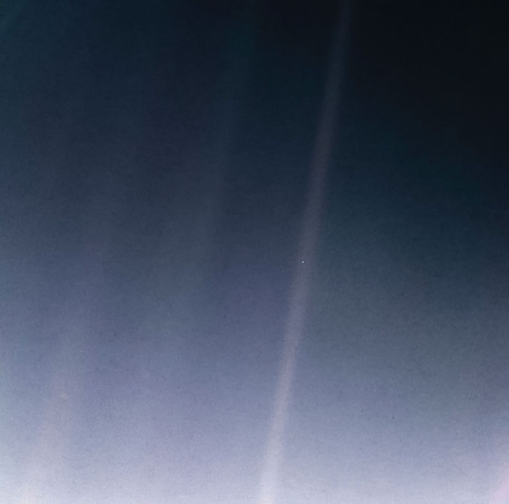
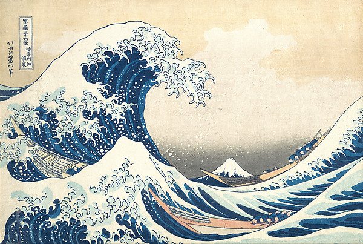
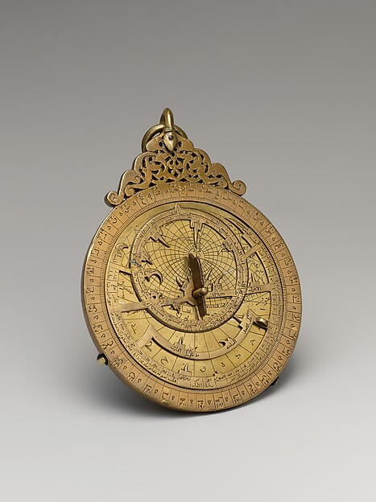

暗淡蓝点：再看地球NASA / JPL-Caltech · 详细使用依据见正文或视听室
深读 / 真
事实不会自动告诉我们怎样生活
从一张地球照片，分清观察、解释、价值与行动。
进入六节论述 →DIFFERENT PATHS · ONE COMMON PURPOSE
从一首诗到一项实验，从独自沉思到共同生活，人类留下了许多探索的道路。我们怎样求真、向善、近美，又怎样在差异之中重新建立关系？
一张可以往返的地图，
不替任何传统预先决定它的终点。
01 / 四个阅读坐标
真、善、美、归是同归的阅读视角，不是一份关于所有文明的统一答案。
深读与应用 / 在问题中继续深入
图像不是装饰，视频不是答案。沿着具体作品、论证与案例，把宏大的问题一点点说清楚。

暗淡蓝点：再看地球深读 / 真
从一张地球照片，分清观察、解释、价值与行动。
进入六节论述 →
葛饰北斋《神奈川冲浪里》深读 / 美
从王蒙、北斋与梵高出发，让感受、形式与历史互相校正。
进入六节论述 →
也门星盘：在同一器物中相遇深读 / 共
从共有资源到共同空间：不把制度交给一个关于人性的口号。
进入六节论述 →回归之路 / A PRACTICE OF RETURNING
先照顾此刻，再辨认热爱、聆听生命、形成表达、松开认同。不是四级台阶，而是每次都能回到日常的四重功课。
02 / 九种接近方式
这些路径彼此重叠，也彼此质疑。每一页都从问题、方法、检验与边界展开。
人怎样在故事、节律与共同参与中找到位置？
我们能否认真检验自己赖以生活的理由？
有限的生命，怎样回应超出自己的意义与责任？
当习惯性的自我解释安静下来，经验会怎样改变？
我们怎样把“我相信”变成别人也能检查的主张？
一件作品，能否改变我们看见世界的方式？
陌生人与意见不同的人，怎样有尊严地生活在一起？
一个人怎样面对自己的冲突，而不必否认其中一部分？
当我们把关系也算进去，什么会变得不同？
03 / 文明交汇
从具体的文本、地点和知识实践进入；不把历史画成一条文明等级的阶梯。
辨认一次判断，听完一个人，或在一件作品前多停留三分钟。